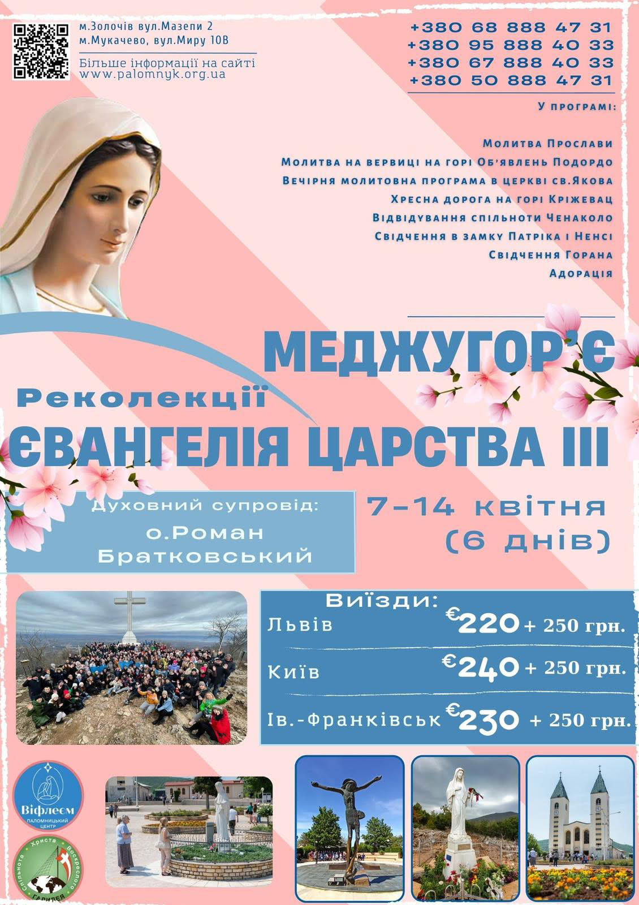
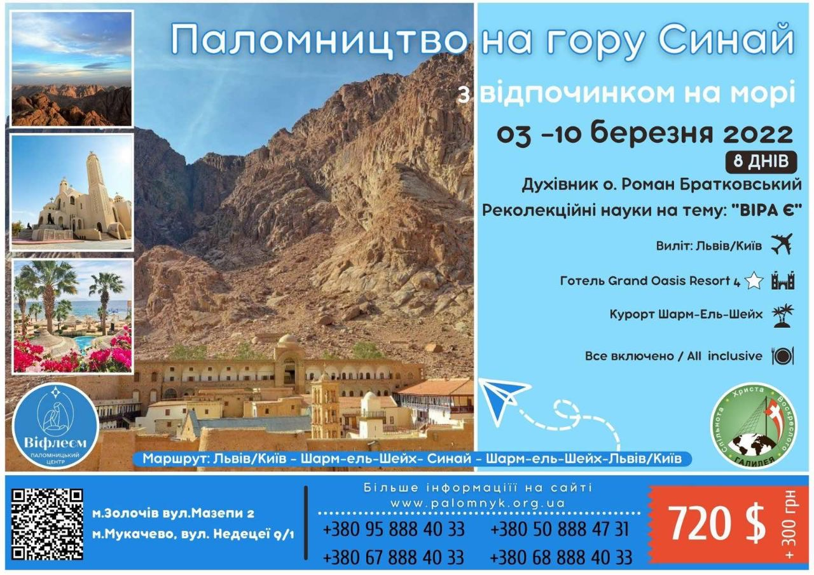
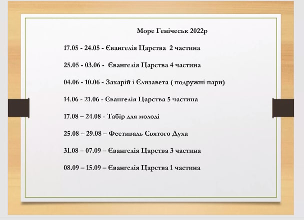

"Галилея"
Греко-католицька євангелізаційна спільнота

Приєднуйтеся:
Головні новини спільноти

📣Запрошуємо чоловіків на курс Яків, який відбудеться 19-20 березня в Брюховичах.📣Якщо ти прагнеш віднайти свою ідентичність в Бозі, то цей курс саме для тебе!🔥
Більш детальна інформація в реєстраційному описі за посиланням нижче 👇
Для реєстрації заповніть форму https://bit.ly/Jakiv2022
Реєстрація триває до 14 березня

Реєстрація на курс відбувається за цим посиланням "Реєстрація"



Новини УГКЦ
-
 13 лютого 2022 00:44
13 лютого 2022 00:44
- «Від неділі, 13 лютого». Єпископи УГКЦ у США закликають до триденної молитви за мир в Україні З огляду на те, що готові до нападу ворожі військові сили оточили демократичну Україну та її волелюбний народ, єпископи УГКЦ у США, на чолі з владикою Борисом Ґудзяком, закликають вірних та всіх людей доброї волі до триденної молитви і посту за мир в Україні, починаючи з неділі, 13 лютого.
УГКЦ
Офіційний сайт Української Греко-Католицької Церкви
-
 09 лютого 2022 12:10
09 лютого 2022 12:10
- Папа Франциск закликав не припиняти молитися за мир в Україні Зустрічаючись із паломниками на традиційній середовій аудієнції, Папа Франциск подякував тим, які два тижні тому особливо молилися за мир в Україні, і побажав успішного результату дипломатичним зусиллям, а також закликав молитися за хворих.
УГКЦ
Офіційний сайт Української Греко-Католицької Церкви

УГКЦ
Офіційний сайт Української Греко-Католицької Церкви
 04 лютого 2022 23:17
04 лютого 2022 23:17
-
«Маємо бути проповідниками надії», – Глава УГКЦ про роль Церкви в сучасній кризовій ситуації
4 лютого благодійна організація «Допомога Церкві в потребі» («Kirche in Not») провела в онлайн-режимі пресконференцію «Україна: досвід Церкви восьми років збройного конфлікту». Основними спікерами на ній виступили Отець і Глава УГКЦ Блаженніший Святослав та Апостольський нунцій в Україні архиєпископ Вісвальдас Кульбокас. Участь у...
УГКЦОфіційний сайт Української Греко-Католицької Церкви

УГКЦ
Офіційний сайт Української Греко-Католицької Церкви
- Наші контакти
- e-mail: galilea-ua@ukr.net
- Координатор спільноти - Олег Лопушанський
- тел. 0962784570
- Пожертва на спільноту
- Рахунок в Приватбанку
- 4149 4390 4239 2062
- Андрійців Юлія Йосифівна
- Місія на Сході:
- Рахунок в Приватбанку
- 4731 2191 2470 2055
- Братковський Р.І.
- На будівництво храму в Преображенці:
- Рахунок в Приватбанку
- 5168 7422 1881 1671
- Братковський Р.І.